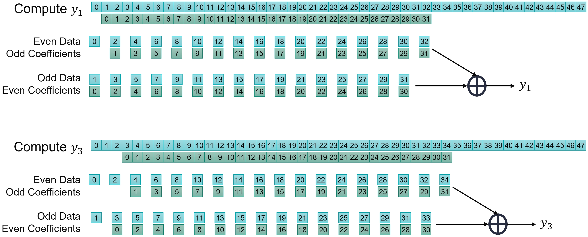
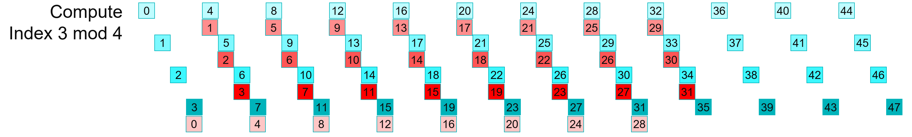
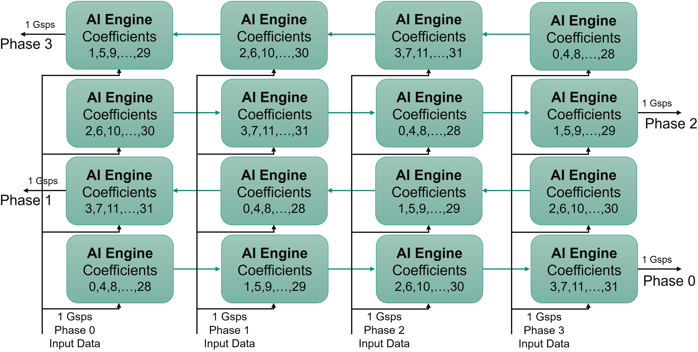

AI Engine DevelopmentSee Vitis™ Development Environment on xilinx.com See Vitis™ AI Development Environment on xilinx.com |
Single-Stream Interface¶
Version: Vitis 2022.1
Super Sampling Rate FIR Filter¶
The purpose of this third part of the tutorial is to understand how to implement a FIR filter that has an input sample rate above the clock frequency of the AI Engine array.
Navigate to the SingleStreamSSR directory to continue.
Super Sampling Rate and Polyphase¶
When the input sampling Rate is above the clock frequency of the processor (Super Sampling Rate), samples must be acquired in parallel. For a 2 Gsps input sample rate, you can specify that the filter should receive two samples at a 1 GHz rate which can be seen as two data streams (Polyphase decomposition), each one at 1 Gsps. Because the AI Engine array AXI-Stream network is limited to 1 GHz (slowest speed grade), the high sampling rate input (above 1 Gsps) will need to be decomposed into multiple phases to be processed.
As a first example, suppose there is a 2 Gsps data stream to be processed, it can be split in two phases to be routed to the AI Engine array:

A 5 Gsps data stream must be split into 5 phases:

Organize Computation for a 2 Gsps Data Stream in 2 Phases¶
For a single-rate filter, a 2 Gsps input sample rate means also a 2 Gsps output sample rate. Because the input stream is separated into two (even, odd) streams, the output stream must be split the same way.
Take a look at how y0 is computed:

If the data stream is split into two phases, it can be seen that the coefficients also have to be split into two phases.

Take a look also at how y2 is computed:

For the even output stream, the data and coefficient phases should match:
Even data phase sent through a filter built with the even phase coefficients
Odd data phase sent through a filter built with the odd phase coefficients
Take a look at how this is modified for the odd outputs:

In this case the phases of the data and coefficients should be mixed:
Even data phase sent through a filter built with the odd phase coefficients
Odd data phase sent through a filter built with the even phase coefficients
There is a further difference between the two; in the odd output case the (even data, odd coefficients) should discard one data at the beginning of the stream.
In the previous section the balance between data transfer and compute performance of the AI Engine was obtained for a 1 Gsps data stream going through an eight tap filter. The balance is identical here. As we have eight different filters, we can process 4x 1 Gsps streams in parallel.
The data stream and the coefficients must be split into four phases and then recombined. In the following figures, the various colors correspond to a different phase for the data (blue) and the coefficients(red):
Output phase 0, will be split and recombined as follows:

Output phase 1, will be split and recombined as follows:

Output phase 2, will be split and recombined as follows:

Output phase 3, will be split and recombined as follows:


The Data and the Coefficients being split into N Phases (four in this case), the resulting architecture requires NPhases x NPhases (4x4 = 16) to be implemented.
Designing the Graph¶
The kernels created in the previous section can be reused here as the only difference will be the way that thay are connected together. In the preceding images, you can see that there are 16 associations (Data Phase, Coefficient Phase). Also, it can clearly be seen that some of the data streams will have the first data discarded before the computation starts:
Output phase 0: no input data phase will have discarded samples
Output phase 1: Input data phase 0 will have 1 discarded sample
Output phase 2: Input data phase 0 and 1 will have 1 discarded sample
Output phase 3: Input data phase 0, 1 and 2 will have 1 discarded sample
To minimize the data routing, all blocks using the same data stream should be placed in the same column. This leads to the following architecture:

In the AI Engine array the direction of the cascade stream is flipped from one row to the next.

This feature needs to be taken into account when placing the kernels to get the cascade connections correct in the graph:

The kernels highlighted in the following figure will need to discard one sample within the initialization function:
At this point consider latencies within the kernels. In the operation scheduling, data is first read from the stream, a mul4 and three mac4 are performed and the accumulator is then sent to the cascade stream. All in all the latency from ‘read’ to ‘write’ is approximately 20-25 clock cycles (call it L, L~25). In the left hand side column this means that the data input from the first row to the second row should enter a FIFO of length ~75 (3L). The Input to row two is approximately the same as row zero, and row three should be fed at the same time as row 1. the following table shows the latencies in multiple of L:
| Column 0 | Column 1 | Column 2 | Column 3 | |
|---|---|---|---|---|
| Row 3 | 3L | 2L | L | 0 |
| Row 2 | 0 | L | 2L | 3L |
| Row 1 | 3L | 2L | L | 0 |
| Row 0 | 0 | L | 2L | 3L |
Depending on the row, the latencies are completely different.
A first possibility is to have these FIFOs implemented in the PL, and have two streams coming from the PL for each column, one serving the even rows and the other serving the odd rows. A single FIFO is required on the first and last columns, but two are necessary for the inner columns:

Another possibility is to have them inside the AI Engine array. A latency of less than 32 colock cycle usually gets implemented into the FIFOs included in the AXI-Stream interconnect. Above that number, it gets implemented in a memory module as a DMA FIFO. Either you can share one DMA FIFO for the odd rows and another one for the even rows, or you dedicate one FIFO for each AI Engine. This is this latter choice that has been done here, and they are constrined to be place right beside the kernel.
C++ Code Analysis¶
The kernel definition is exactly the same as the previous part of this tutorial. The only difference is in the graph to encode this 16 kernel four-phase filter.
At the graph level, all the kernels are first declared in a class:
class FIRGraph_4Kernels: public adf::graph
{
private:
kernel k[4][4];
public:
input_port in[4];
output_port out[4];
The constructor takes charge in the next operations. The first operation is to create the kernels. The complete grid of 4x4 kernels is defined as follows:
FIRGraph_SSR4()
{
// k[N][0] is always the first in the cascade stream
// Topology of the TopGraph
//
// 3,3 3,2 3,1 3,0 <--
// --> 2,0 2,1 2,2 2,3
// 1,3 1,2 1,1 1,0 <--
// --> 0,0 0,1 0,2 0,3
k[0][0] = kernel::create_object<SingleStream::FIR_MultiKernel_cout<NUM_SAMPLES,SHIFT>>(taps4_p0);
k[0][1] = kernel::create_object<SingleStream::FIR_MultiKernel_cincout<NUM_SAMPLES,SHIFT>>(taps4_p1);
k[0][2] = kernel::create_object<SingleStream::FIR_MultiKernel_cincout<NUM_SAMPLES,SHIFT>>(taps4_p2);
k[0][3] = kernel::create_object<SingleStream::FIR_MultiKernel_cin<NUM_SAMPLES,SHIFT>>(taps4_p3);
.
.
.
k[3][0] = kernel::create_object<SingleStream::FIR_MultiKernel_cout<NUM_SAMPLES,SHIFT>>(taps4_p0);
k[3][1] = kernel::create_object<SingleStream::FIR_MultiKernel_cincout<NUM_SAMPLES,SHIFT>>(taps4_p3);
k[3][2] = kernel::create_object<SingleStream::FIR_MultiKernel_cincout<NUM_SAMPLES,SHIFT>>(taps4_p2);
k[3][3] = kernel::create_object<SingleStream::FIR_MultiKernel_cin<NUM_SAMPLES,SHIFT>>(taps4_p1);
The source and header locations are then defined for the AI Engine. The location of the first AI Engine in each row must also be constrained to facilitate the placer work:
// Constraints: location of the first kernel in the cascade
for(int i=0;i<NPhases;i++)
{
int j = (i%2?28:25); // 25 on even rows and 28 on odd rows
location<kernel>(k[i][0]) = tile(j,i);
}
To shorten the place time by a few seconds, you can constrain the core location. A single one is necessary because all the others will be constrained by the cascade connection:
// Constraints: location of the first kernel in the cascade
location<kernel>(k[0]) = tile(25,0);
All kernels need to discard a specific number of elements, this will be handled by the initialization function as this must be done beforehand and only once. This can be done in a loop on the column and rows with two initialization functions:
SingleStream::FIRinit<0>SingleStream::FIRinit<1>
Finally, the kernels must be connected together with the cascade stream in between them, and the input streams for all of them.
// Cascade Connections
for(int row=0;row<NPhases;row++)
{
for(int i=0;i<NPhases-1;i++) connect<cascade> (k[row][i].out[0],k[row][i+1].in[1]);
connect<stream> (k[row][3].out[0],out[row]);
}
// Input Streams connections and DMA FIFO constraints
for(int row = 0;row<NPhases;row++)
for(int col=0;col<NPhases;col++)
{
int col1 = (row%2?NPhases-col-1:col); // kernel col is inverted on odd rows
int fiforow = row; // Each Kernel is served by an independent FIFO
connect<stream> n0 (in[col],k[row][col1].in[0]);
fifo_depth(n0) = 512;
location<fifo>(n0) = dma_fifo(aie_tile, FirstCol+col, fiforow, 0x0000, 512);
}
Compilation and Analysis¶
Navigate to the MultiKernel directory. In the Makefile three methods are defined:
aieCompiles the graph and the kernels
aiesimRuns the AI Engine System C simulator
aievizRuns
vitis_analyzeron the output summary
Take a look at the source code (kernel and graph) to familiarize yourself with the C++ instanciation of kernels. In graph.cpp the PL AI Engine connections are declared using 64-bit interfaces running at 500 MHz, allowing for maximum bandwidth on the AI Engine array AXI-Stream network.
To have the simulation running, input data must be generated. There are 2 possibilities:
Just type
make dataChange directory to
dataand typeGenerateStreams. The following parameters should be set for this example:
Click Generate then Exit. The generated files PhaseIn_0.txt … PhaseIn_3.txt should contain mainly 0’s, with a few 1’s and 2’s.
Type make all and wait for the vitis_analyzer GUI to display. The Vitis analyzer is able to show the graph, how it has been implemented in the device, and the complete timeline of the simulation. In this specific case the graph is very simple (a single kernel) and the implementation is on a single AI Engine.
Click Graph to visualize the graph of the application:
The 16 kernels and their eight independent input streams are clearly visible. The top graph is for the output phases 0 and 2, the phases where the cascade stream is from left to right on the physical device. The bottom graph is for phases 1 and 3 where the cascade stream is from right to left.
Click Array to visualize where the kernel has been placed, and how it is fed from the the PL:
In this view the cascade streams connecting neighboring AI Engines are key to the performance of this graph. With the four location constraints that were added, the placer had only one solution for the kernel placement: this square. The router had an easy job to feed all these kernels by simply using the south-north AXI-Stream. The path back to the PL from the extremities also uses only the vertical AXI-Streams.
Finally click Trace to look at how the entire simulation went through. This may be useful to track where your AI Engine stalls if performance is not as expected:

Now the output of the filter can be displayed. The input being a set of Dirac impulses, the impulse response of the filter should be recognized throughout the waveform. Navigate to Emulation-AIE/aiesimulator_output/data and look at the output_0.txt. You can see that you have two complex outputs per line which is prepended with a time stamp. ProcessAIEOutput output_*.

The top graph reflects the real part of the output. The bottom graph this is the imaginary part. On both, the filter impulse response is recognizable.
The performance of this architecture can be measured using the timestamped output. In the same directory (Emulation-AIE/aiesimulator_output/data) type StreamThroughput output_*:
output_0.txt --> 954.33 Msps
output_1.txt --> 949.91 Msps
output_2.txt --> 954.33 Msps
output_3.txt --> 949.91 Msps
-----------------------
Total Throughput --> 3808.48 Msps
This architecture achieves very close to 4 Gsps performance. It is slightly less because of the number of cycles spent for initialization when the kernels are called. This performance increases when the frame length is increased.
Vitis Model Composer implementation¶
In the directory vitis_model_composer launch Vitis Model Composer with the comman model_composer. There are 2 designs in this directory:
SingleStreamSSR.slx
SingleStreamSSRwithPL.slx
The first one is the 4 phases SSR built in the AI Engine array using the AIE blockset of Vitis Model Composer. The design is fed from pure Simulink blocks and the result is diplayed in a scope to verify that the difference with the pure floating-point Simulink implementation is not too high. At the same time the signal is sent through a spectrumscope to verify the output spectrum.
The second design contains the previous design but, to show what would be a real hardware implementation,the input and the output of the AI Engine array are a Programmable logic design created with the HDL blockset:
Input:
The 32-bit 4 Gsps input sample rate is divided into 8 branches @500MHz to feed the PL as for a standard ADC.
These 8x 32-bit branches are recombined into 4x 64-bit phases and sent into FIFOs.
Actually there are 2 FIFOs per phase which contains exactly the same data to feed 2 branches that will be consumed on the AI Engine array side at different instants. Two consecutive rows of the array being oriented in opposite ways in hardware, even and odd rows do not consume the data at the same timestamps due to the fact that the latency since the first block of the cascade chains are different.
Output:
The FIFOs are there to resynchronize the various branches in order to get a clean, well ordered output signal
Before and after the PL we have the same source signal and sinks (scope and spectrumscope) to verify the functionality of the AI Engine+PL design.